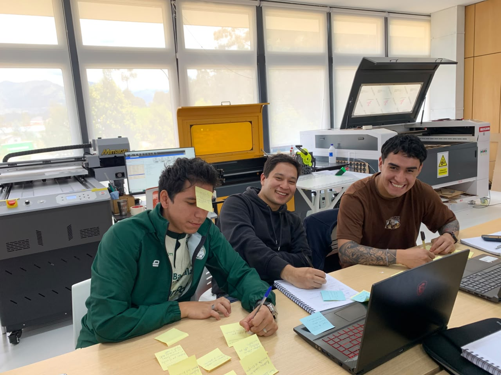
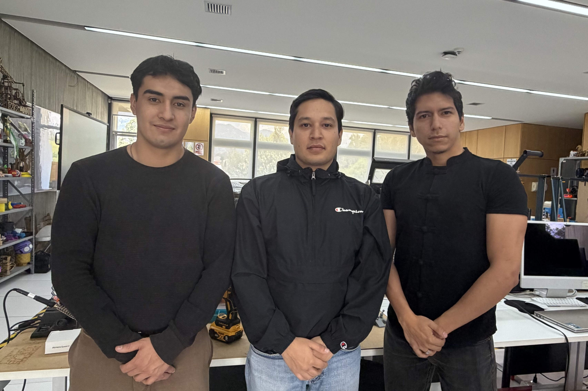

Universidad de Cuenca / FabLab Industrial
PENSAR.
PROBAR.
HACER.
Tres estudiantes, una mesa de trabajo y muchas ideas por poner a prueba. Este es el proceso detrás de YuraFab.

01 Una idea se discute.
02 Un diseño se pone a prueba.
03 El proceso se comparte.
01 / El proyecto
De una pregunta
a un prototipo.
¿Cómo podemos cuidar una planta usando diseño, electrónica y fabricación digital?
Riego inteligente.
Diseño con propósito.
Exploramos un sistema que lea la humedad del suelo y dosifique el agua según las necesidades de la planta. El trabajo conecta investigación, diseño de piezas, sensores y programación.
Esta bitácora reúne los ejercicios del curso y la construcción de esa propuesta. Cada prueba tiene su lugar, incluidas las preguntas que siguen abiertas.
02 / Acerca de nosotros
Tres miradas.
La misma mesa.
Somos Dennis, Paul y Derek. Estudiantes, compañeros de taller y autores de este proceso.

Aprender haciendo.
Contarlo con criterio.
Partimos de una idea compartida y la trabajamos entre modelos, materiales y pruebas. Nos interesa que esta página muestre cómo pensamos y construimos, además del resultado final.
Aportamos desde habilidades complementarias: desarrollo web y documentación, diseño y modelado, e integración de componentes. Los tres participamos en las actividades y compartimos aprendizajes y decisiones.
Dennis Vera / Paul Coro / Derek Capa
03 / Bitácora académica
Nueve semanas.
Un proceso visible.
El recorrido del curso, organizado según la guía. Dentro de cada semana están las evidencias, los archivos disponibles y lo que falta documentar.
04 / Biblioteca del proyecto
Del registro
al archivo.
Archivos disponibles para consultar o continuar el trabajo. Los entregables que faltan se identifican dentro de su semana.